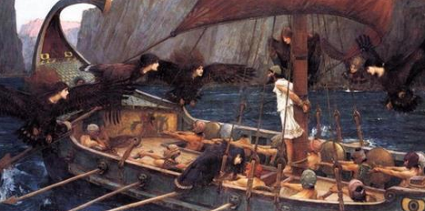
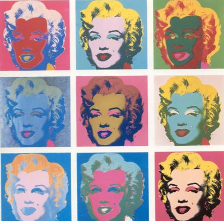

PART 3. 20세기 비판이론 · 6주차 상징성
효율적인 것이
좋은 것인가
테오도르 아도르노 — 동일성과 문화산업
00이 주차의 위상
4~5주차 벤야민이 기술 복제를 기회로 봤다면, 아도르노는 같은 것을 기만으로 봄. 같은 학파, 정반대 결론임.
여는 질문
- 추천 알고리즘은 당신이 좋아할 것을 줌. 그것도 아주 잘 줌.
- 그런데 "좋아할 것"과 "좋은 것"은 같은가.
- 더 불편한 물음 — 당신이 그것을 좋아하게 된 것은, 그것을 계속 받았기 때문 아닌가.
01오늘 만날 개념
- 계몽Aufklärung · Enlightenment
- 18세기 이성 중심 사상. "이성으로 미신과 억압에서 벗어나자"임.
- 변증법dialectic
- 대립하는 것들이 부딪혀 움직여 나가는 논리임. "계몽의 변증법" = 계몽이 스스로를 배반하는 운동.
- 목적합리성 · 가치합리성Zweckrationalität / Wertrationalität
- 베버의 구분임. 목적합리성은 수단을 계산함, 가치합리성은 결과와 무관하게 가치 자체를 좇음.
- 도구적 이성instrumentelle Vernunft
- 목적은 묻지 않고 효율적 수단만 계산하는 이성임. "어떻게 더 빨리?"만 묻고 "왜 빨라야 하나?"는 안 물음.
- 동일성 · 비동일성Identität / Nichtidentität
- 동일성은 서로 다른 것을 하나의 개념 아래 같은 것으로 묶는 것. 비동일자는 그 개념에 안 들어가는 것임.
- 물화reification
- 사람과 관계가 물건처럼 다뤄지는 것임. "인적 자원", "고객 이탈률".
- 양화量化 · quantification
- 질적인 것을 숫자로 바꾸는 것임. 슬픔을 1~10점으로 매기기, 강의를 별점으로 매기기.
- 부정변증법negative Dialektik
- 헤겔 변증법 비판. "부정의 부정은 긍정이 아님." 종합에 도달하지 않고 부정에 머무는 사유임.
- 문화산업Kulturindustrie
- 아도르노·호르크하이머의 조어임. '대중문화'라 부르지 않은 이유 — 대중이 만든 것이 아니기 때문임.
- 탐욕 알고리즘greedy algorithm
- 매 단계에서 당장 가장 좋아 보이는 것을 고르는 방식임. 빠르지만 전역 최적을 보장하지 않음.
02왜 그렇게 어두운가
Jeremy J. Shapiro · CC BY-SA 3.0 · Wikimedia Commons
"아우슈비츠 이후에 서정시를 쓴다는 것은
야만적임."
야만적임."
아도르노 전체의 출발점.
유대인 학살의 세 가지 메커니즘
① 과학기술의 사용
가스실- 가장 합리적인 수단으로 가장 야만적인 목적을 달성했음
- 열차 시간표, 물류 최적화, 처리 효율 — 모두 근대 행정의 성취였음
② 병적 혐오감
범주 바깥- 유대인 = 같은 범주에 포함되지 않는 존재
- 자연과 마찬가지로 두려운 존재로 취급됐음
③ 양화된 동일자 취급
번호가 됨- 사람을 번호로 만들고, 숫자로 세고, 처리했음
- 수용자 번호
아우슈비츠 해방 기록 영상 스틸(1945) · 교육 목적 인용
오늘의 전체 논지가 여기 다 있음
- ① 효율적 계산 ② 범주에 안 들어가는 것의 배제 ③ 양화된 동일자 취급.
- 아도르노는 이 셋이 아우슈비츠에서 극단화되었을 뿐, 근대 이성의 구조 자체라고 봄.
- 그래서 그는 문화산업을 볼 때도 같은 셋을 봄.
03계몽의 변증법
"왜 인류는 인간적 상태로 가지 않고
새로운 야만으로 돌아가는가."
새로운 야만으로 돌아가는가."
나치의 홀로코스트, 스탈린의 강제수용소, 세계대전, 원자폭탄.
계몽이란
- "나는 생각한다, 그러므로 존재한다"(데카르트).
- "주술로부터의 해방"(베버).
- 이성에 대한 믿음과 생활의 합리화임.
- 그런데 관리 사회 안에서 도구적 이성으로 전락함.
막스 베버(Max Weber)의 합리성
| 구분 | 계산하는 쪽 | 물음을 남기는 쪽 |
|---|---|---|
| 행위 유형 사회적 행위의 네 유형 중 둘 |
목적합리성Zweckrationalität 목적을 정해 놓고 수단·결과·부작용을 계산함 |
가치합리성Wertrationalität 성공 여부와 무관하게 가치 자체를 좇음 |
| 제도 수준 경제·법·관료제 |
형식합리성formale Rationalität 계산 가능성·규칙·수량화. 화폐 회계와 관료제 |
실질합리성materiale Rationalität 정의·평등·구제 같은 실질적 가치 기준 |
| 묻는 것 | "어떻게?" — 수단 | "왜?" — 목적 |
아도르노로 넘어가는 다리 — 두 이성과의 대응
- 목적합리성 + 형식합리성 → 호르크하이머·아도르노의 도구적 이성임. 수단만 계산하고 목적은 주어진 것으로 받음.
- 가치합리성 + 실질합리성 → 비판적 이성이 서는 자리임. "그 목적이 과연 옳은가"를 묻는 능력.
문명의 네 단계
원시애니미즘
자연은 두려운 존재임
고대신화
자연을 형상화·이야기화함. 자연과 소통함
근대계몽
기술과 과학. 이성과 합리화로 자연에서 분리됨. 자기동일성의 원칙에 따라 자연을 객체화·동일자화·양화함
현대
인간 학살과 전쟁. 인간 안의 비동일성 제거. 야만적 신화로 퇴화함

John William Waterhouse, 〈Ulysses and the Sirens〉(1891), National Gallery of Victoria · Public domain
이 그림에서 읽을 것 셋
- 자기 지배 — 자연(세이렌의 노래)을 이기려면 먼저 자기 충동을 묶어야 함. 지배는 바깥에서 시작되지 않음.
- 노동 분업 — 즐김은 주인의 몫, 노동은 선원의 몫임. 계몽은 처음부터 계급을 품고 있었음.
- 예술의 자리 — 세이렌의 노래는 들을 수는 있으나 따를 수는 없는 것이 됨. 11절 '기능없음의 기능'으로 이어짐.
04자기동일성 원칙
서로 다른 것을 같은 것으로 다루기까지 거치는 절차임. 여섯 단계로 나뉨.
언어화
이름 붙임
→
양화
숫자가 됨
→
물화
자원이 됨
→
체계화
배열됨
→
기술화
통제됨
→
제도화
기본값이 됨
사례 — 숲을 인공정원으로 만들기
| 단계 | 숲을 인공정원으로 만드는 사례 |
|---|---|
| 언어화 | 나무를 '관상수' · '잡초' · '관리 대상'으로 명명함 |
| 양화 | 나무의 높이 · 굵기 · 간격 · 가격을 수치로 표현함 |
| 물화 | 살아 있는 나무를 설계 목적에 따라 옮기고 교체하는 관리 자원으로만 취급함 |
| 체계화 | 나무를 분류하고 설계도에 따라 규칙적으로 배열함 |
| 기술화 | 관수 · 방제 기술로 나무의 형태와 생장을 통제함 |
| 제도화 | 관리 기준을 규정으로 정하고 지속적으로 적용함. 더 나아가 입장료를 받고 상업화함 |
'잡초'라는 말에 이미 다 들어 있음
잡초라는 식물은 세상에 없음. 설계도에 자리가 없는 식물이 잡초가 됨. 비동일자는 발견되는 것이 아니라 명명과 동시에 만들어짐 — 그리고 곧바로 제거 대상이 됨.
05신화와 계몽은 얽혀 있음
『계몽의 변증법』의 두 핵심 명제.
"신화가 이미 계몽이었음"
앞의 문장- 신화는 자연현상의 기원과 질서를 설명하여 두려움을 다루려는 시도였음
- 신화에도 세계를 분류하고 질서화하며 통제하려는 계몽의 요소가 이미 있었음
- 신화와 계몽은 단절된 반대물이 아니라, 차이를 지니면서도 서로 얽혀 있음
"계몽은 신화로 퇴화함"
뒤의 문장- 계몽은 신화적 두려움과 운명에서 인간을 해방하려 했음
- 그러나 모든 것을 계산·분류·통제의 대상으로 환원하면 인간도 지배의 대상이 됨
- 인간이 만든 사회 질서가 불가피한 운명처럼 받아들여질 때, 계몽은 신화적 강제를 재생산함
06문화산업의 여섯 갈래
왜 '대중문화'가 아니라 '문화산업'인가
대중이 만든 것이 아니라 대중에게 공급된 것이기 때문임.
| 갈래 | 내용 |
|---|---|
| ① 규격화된 획일성 | 예술의 참신성과 개성이 소멸함 |
| ② 상품화 | 대량생산됨 |
| ③ 동일성 사유의 재생산 | 예술의 진지한 정신성이 배제되고 본질적 비판 기능이 사라짐 |
| ④ 대중 기만 | 대중이 요구하는 것을 생산하는 것이 아니라 대중의 요구와 반응을 조작함. 미메시스적 수용의 소멸. 대중은 만들어진 허위욕구로 채워진 수동적 존재가 됨 |
| ⑤ 분산적 지각 강요 | 집중·침잠·관조가 소멸함. 산만한 오락 소비 → 퇴행적 |
| ⑥ 비판의식 실종 유도 | 수용자의 체제 순응을 유도함. 관리 사회의 체계가 공고해짐 |
유사개인화(pseudo-individualization, 사이비개성화) — 아도르노 용어
- 표면적 차이가 근본적 획일성을 감춤.
- 아도르노는 1940년대 대중가요를 분석하며 이 말을 만들었음. "모든 곡이 다르게 들리지만 코드 진행과 후렴 구조는 똑같다."
- 지금 — 모든 피드가 다르게 보이지만 후크 위치·클라이맥스 시점·자막 스타일은 똑같음.

Andy Warhol, 〈Marilyn〉 연작(1967) · 교육 목적 인용
문화산업 여섯 갈래를 알고리즘으로 다시 읽으면
| 아도르노의 갈래 | 지금의 형태 |
|---|---|
| 규격화된 획일성 | 포맷·길이·썸네일의 수렴. "성공 공식"의 학습 |
| 상품화 | 의미나 작품성보다 조회수·시청 시간·광고 수익 우선 |
| 대중 기만 | 선호를 읽는 척하며 만듦. 유사개인화 |
| 분산적 지각 강요 | 자동재생 · 무한스크롤 · 숏폼 |
| 비판의식 실종 | 익숙하거나 즉각 반응하게 만드는 콘텐츠 반복. 반대 의견은 덜 노출됨. |
07벤야민과의 정면 충돌
벤야민 4~5주차
분산적 지각은 기회- 새로운 지각의 훈련장
- 대도시의 촉각적 지각
- 비판의 조건
아도르노 오늘
분산적 지각은 퇴행- 퇴행
- 집중과 침잠의 소멸
- 순응의 조건
같은 현상, 정반대 평가
두 사람은 실제로 이 문제로 편지를 주고받으며 다퉜음. 스스로 물어볼 것 — 어느 쪽에 설 것인가.
두 사람의 대조
| 쟁점 | 벤야민 | 아도르노 |
|---|---|---|
| 공통 기반 | 마르크스주의적 사회비판이론 | |
| 대중매체 평가 | 긍정적 | 부정적 |
| 예술의 사회적 기능 | 중시함. 정치의 예술화(파시즘) ↔ 예술의 정치화(비판) | 관리 사회에 포섭되지 않는 비동일자로 남아야 함 |
| 대중문화의 생산 | 대중화에 긍정적 | 자본에 의한 대량 복제와 생산 |
| 대중문화의 수용 | 능동적 가능성을 봄 | 무비판적·소극적으로 봄 |
| 결론 | 새로운 예술의 시작 | 자본 중심 문화산업의 강화 |
08탐욕 알고리즘과 도구적 이성
변정수(2025) 3부 1장 「탐욕 알고리즘과 도구적 합리성」.
- 매 단계에서 당장 가장 좋아 보이는 선택을 함. 한 번 고르면 되돌아보지 않음.
- 빠르고 단순함. 그런데 전역 최적을 보장하지 않음.
- 사례: 화폐 단위가 1 · 3 · 4원이라 하면, 6원을 만들 때 탐욕은 4+1+1 = 3개임. 최적은 3+3 = 2개임. 탐욕은 화폐 체계에 따라 최적이기도 하고 아니기도 함.
도구적 이성과의 정확한 대응
| 탐욕 알고리즘 | 도구적 이성 |
|---|---|
| 매 단계 국소 최적만 좇음 | 목적은 묻지 않고 수단의 효율만 계산함 |
| 전역 최적을 보장하지 않음 | 좋은 삶을 보장하지 않음 |
| 되돌아가지 않음 (비가역) | 자기반성이 없음 |
| 최적성이 증명된 경우에만 정당함 | 목적이 검토된 경우에만 정당함 |
09부정변증법 — 비동일자를 구하기
- 현대사회는 이성 중심의 합리화와 시민적 냉혹함이 지배함. 자연과 타인을 객체화함.
- 부정의 부활이 필요함. 문명화는 부정의 영역을 체계적으로 퇴출시킨 과정이었음.
- 부정성이 제거된 언어로는 사회 비판이 불가능함.
헤겔 변증법 비판
- 헤겔은 이성을 중시하고 자연을 배제했음.
- 정반합의 변증법으로 이성의 자연 착취를 정당화했음.
- 부정의 부정은 부정의 강화일 뿐임 → 부정변증법이 필요함.
쉽게 말하면
- 헤겔은 대립이 부딪히면 더 높은 종합에 이른다고 봤음.
- 아도르노는 그 '종합'이 결국 한쪽이 다른 쪽을 삼킨 것이라고 봄.
- 회의에서 "그럼 절충해서 이렇게 합시다"가 늘 좋은 결론인가. 절충안이 약자의 요구를 지워버린 경우를 떠올려 볼 것.
세 테제
- 비동일자의 중요성 동일자(개념적·보편적) 대 비동일자(비개념적·개별적). 개념에 의한 보편자 추구가 전체주의 사고를 정당화하며 개인을 억압함.
- 객체의 실재성·우위 인정 주체가 객체에 의식을 투영하는 위계적 관계가 아님. 주체가 실재하는 개별적 객체의 변화에 순응해야 함. 미메시스를 통한 주체-주체 관계 복원이 필요함 → 4~5주차 벤야민의 미메시스.
- 체계성 비판 개체 간 모순은 합의를 위한 발판이 아니라 비동일성 그 자체로 인정돼야 함. "전체는 비진리" — 전체는 부분들이 공통성으로 통합된 것이 아니라, 서로 대립되는 개체들이 구성한 '적대적 전체'일 뿐임.
10임베딩과 양화된 동일자
변정수(2025) 4부 11장 「마스터 알고리즘과 전일론」.
- 마스터 알고리즘 — 페드로 도밍고스의 구상임. 다섯 학파(기호주의·연결주의·베이즈주의·유추주의·진화주의)를 하나로 통합한 만능 학습 알고리즘. 세상의 모든 지식을 스스로 발견할 수 있는 만능 인공지능 치트키이지만, 발명되지 않았음
- 전일론(holism) — 전체는 부분의 합 이상이며, 전체를 알아야 부분을 안다는 입장임.
아도르노의 정면 반박
"전체는 비진리임." 그렇다면 모든 학습을 통합하는 마스터 알고리즘은 원리적으로 불가능한가. 아니면 가능하지만 그것이 곧 전체주의인가.
임베딩은 '양화된 동일자 취급'인가
- 임베딩은 단어 · 이미지 · 사람 · 행동을 모두 같은 벡터공간의 점으로 만듦.
- 그래야 거리를 측정하고, 비교하고, 계산할 수 있음.
- 아도르노가 아우슈비츠 분석에서 쓴 말을 다시 볼 것 — "양화된 동일자 취급".
이상치 제거는 당연한 일?
이상치 제거는 성능을 위해 당연히 하는 일임. 그런데 그 이상치가 소수 언어 사용자, 희귀 질환자, 비전형적 얼굴이라면 어떻게 되는가. 4절의 '잡초'를 다시 떠올릴 것.
11기능없음의 기능
진정한 예술
- 세상에 드러나지 않은 진리의 계기를 포함함.
- 부정과 비판의 역할을 수행함.
- 체계에 포함되지 않는 탈주 → 아방가르드(Avant-garde)
- 사례: 마르셀 뒤샹(Marcel Duchamp)의 샘(Fountain, 1917), 아르놀트 쇤베르크(Arnold Schoenberg)의 무조음악
Marcel Duchamp / Alfred Stieglitz · Public domain · Wikimedia Commons
"예술작품이 어떤 사회적 기능을 지닌다고 단언할 수 있다면 그것은 작품의 무기능성임. 예술의 기능은 바로 기능없음에 있음. 예술은 기꺼이 사회 내의 눈엣가시임. 관리되는 사회에 편입되지 않은 채 이를 비판할 수 있는 비동일자로 남아야 함."
아도르노 『미학이론』의 예술관
물음
- 모든 것이 최적화되는 시대에 '기능 없음'은 가능한가.
- 알고리즘은 모든 콘텐츠에 참여도 점수를 매김. 점수 없는 콘텐츠는 없음.
- "쓸모없음"조차 니치 콘텐츠로 분류되어 추천됨. "아무것도 하지 않는 영상"이 힐링 콘텐츠 범주가 되어 조회수를 올림.
- 아방가르드는 여전히 탈주할 수 있는가, 아니면 이미 태그가 붙었는가.
아도르노의 한계
두 가지 결여
- 매체 사용의 다양한 가능성을 간과했음 — 억압적 미디어와 해방적 미디어의 구별이 없음.
- 수용자 관점이 결여됐음 — 자본의 대중문화 생산에만 초점을 둠. 수용자를 소극적·무비판적 존재로 간주함.
- 아도르노는 강력하지만 사람들이 실제로 무엇을 하는지 보지 않았음. 팬덤, 밈, 리믹스, 2차 창작 — 이것들은 문화산업의 산물인가, 그 안에서의 저항인가.
12정리 · 흔한 오해 · 토론
이번 주 개념 다섯
- 계몽의 변증법 이성이 해방의 도구에서 지배의 도구로 뒤집히는 운동. 베버의 목적합리성이 가치합리성을 밀어낸 과정.
- 자기동일성 원칙 언어화 → 양화 → 물화 → 체계화 → 기술화 → 제도화. 다른 것을 같게 만드는 절차임.
- 문화산업 대중이 만든 것이 아니라 대중에게 공급된 문화. 규격화·상품화·기만.
- 유사개인화 표면적 차이가 근본적 획일성을 감춤.
- 비동일자 · "전체는 비진리" 개념에 안 들어가는 것. 그리고 전체는 적대적 전체일 뿐이라는 테제임.
흔한 오해 넷
오해 1 — "아도르노는 대중문화를 무시한 엘리트주의자"
- 교정 — 그런 비판이 실제로 있음.
- 다만 그의 표적은 작품의 수준이 아니라 생산·수용의 구조임.
- "재미있는 걸 좋아하면 안 된다"가 아니라 "당신의 취향이 어디서 왔는지 묻자"임.
오해 2 — "신화와 계몽은 같은 것"
- 교정 — 아님. 차이를 지니면서 얽혀 있다는 것임.
- 주술은 모방과 유사성으로 특정 대상과 관계 맺고, 과학은 추상화와 일반화로 대상을 교환 가능하게 만듦. 주술이든 과학이든, 대상을 내 입맛대로 통제하고 지배하려는 목적(동일성 원칙)은 똑같다
오해 3 — "부정변증법 = 무조건 반대"
- 교정 — 아님. 종합에 성급히 도달하지 않고 모순을 모순으로 견디는 사유임.
- 반대가 아니라 유보에 가까움.
토론 질문
- 참여도(사용자의 특정 플랫폼 체류와 반응) 최적화는 '좋은 삶'을 보장하는가.
보장하지 않는다면 무엇으로 대체할 수 있는가. 대안 목표를 하나 제안해 볼 것. 그리고 그것을 측정할 수 있는지 따져볼 것. 측정할 수 없으면 최적화도 불가능함. 이 난점 자체가 아도르노의 논지임. - 모든 것을 하나의 벡터공간에 넣는 임베딩은 "양화된 동일자 취급"인가.
비동일자는 임베딩에서 어떻게 되는가. 표현 불가인가, 이상치인가, 제거인가. - 분산적 지각은 비판의 조건인가 순응의 조건인가.
벤야민과 아도르노 중 각자 입장을 정하고 근거를 댈 것. - 모든 콘텐츠에 참여도 점수가 매겨지는 시대에 '기능 없음'은 가능한가.
13참고자료
이번 주 읽기
- B 심혜련 (2012). 『20세기의 매체철학』 — 1부 3장
- C 심혜련 (2024). 『21세기의 매체철학』 — III부 4장 1절 「관조에서 관여로」 pp.353~359
- D 변정수 (2025). 『알고리즘으로 철학하기』 — 3부 1장 + 4부 11장
원전
- 아도르노·호르크하이머. 『계몽의 변증법』 — 「문화산업: 대중 기만으로서의 계몽」 장만. 학부생도 읽을 수 있음
- 아도르노·호르크하이머. 『계몽의 변증법』 — 「오디세우스 또는 신화와 계몽」(부연설명 I) 03절 오디세우스 대목의 출처
- 아도르노. 『미학이론』 — 무기능성 대목만
- 아도르노. 『부정변증법』 — 서론
보조
- 신혜경 (2011). 『벤야민 & 아도르노: 대중문화의 기만 혹은 해방』. 김영사 4~5주차 대질용으로 가장 쉬움
- 막스 베버. 『프로테스탄티즘 윤리와 자본주의 정신』 — 결론의 '쇠우리' 대목만 03절 대질용
- 막스 베버. 『경제와 사회』 — 「사회학의 기초개념」 §2 사회적 행위의 유형 목적합리성·가치합리성의 원출처
- 페드로 도밍고스. 『마스터 알고리즘』 10절 대질용
이어지는 주차
- 7주차 — 귄터 안더스 · 하이데거: 팬텀과 매트릭스 물질성
안더스는 하이데거와 아도르노를 함께 계승함. 오늘의 논의가 곧바로 이어짐.